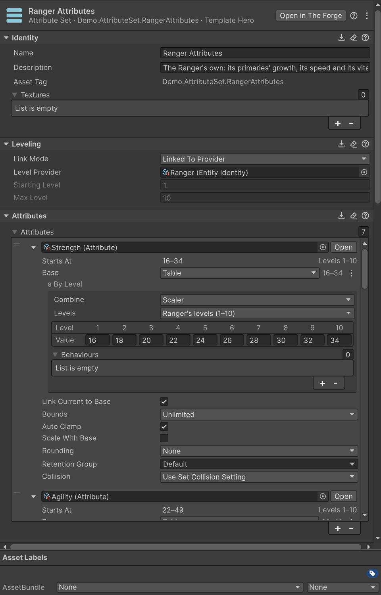

Attribute Sets
An Attribute Set asset lists the attributes an entity starts with, and how each one starts: its Current and Base values, its bounds and its rounding. An entity is anything that runs a gameplay ability system (GAS), such as the player or an enemy. Its Entity asset names one set.

Ranger Attributes's inspector.
When the GAS initializes, it builds every attribute in the set and in its sub-sets. Each element becomes its attribute's root value, the value before any effect. Gameplay effects then change the attribute on top of that root.
A root can follow the entity's level or another attribute, through a cached scaler. It is worked out again whenever the attribute is recalculated.
Tags are names, such as State.Stunned, that an entity carries and that requirements check. Each asset stores a tag
made from its Name: Hero Stats gives AttributeSet.HeroStats. The entity carries the set's tag and the tags of its
sub-sets.
Each section below matches the inspector section of the same name. A collapsed section shows one line about what it holds, such as the level range or how many attributes the set gives.
In this guide
- Identity: The Identity section names the set, shows its asset tag and holds its icons.
- Leveling: The Leveling section sets the level range the cached scalers on the set's elements are authored for.
- Attributes: The Attributes section lists the set's elements, each of which sets up one attribute.
- Sub-Sets: The Sub-Sets section lists other attribute sets this set includes.
- Collision Settings: These settings decide an attribute's root value when it appears in more than one element, across this set and its sub-sets.
- All Attributes: All Attributes is a table of each attribute the set gives an entity, its sub-sets' included, once each.
- Workers: Workers are reusable behaviours, picked from a list, that react to what happens to an entity.
- Local Data: Local Data is a list of named values stored on the asset.
- Used By: The Used By section lists the PlayForge assets that refer to this set, each with its type icon, such as an entity built from it or a set that holds it as a sub-set.